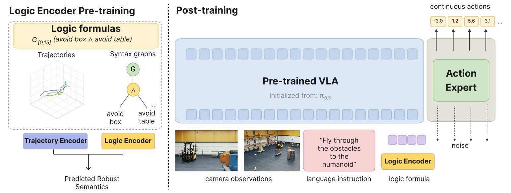
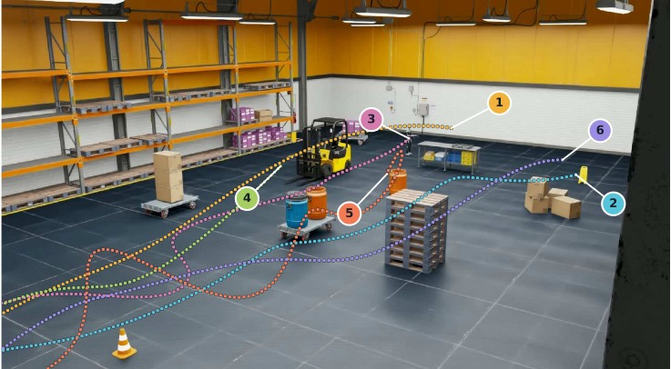
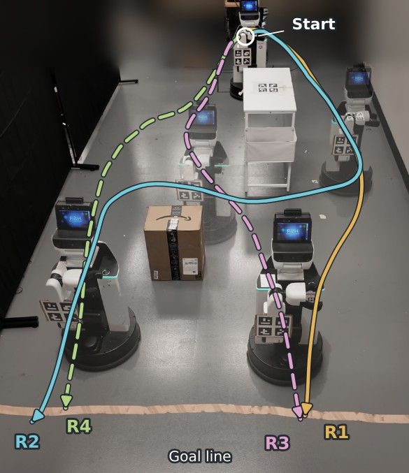

Requirement-aware post-training●Signal Temporal Logic
Logic-VLA
A temporal logic conditioned vision-language-action model.
policy πθ̃( a | o, ℓ, φ )
input o : camera observation
input ℓ : natural-language task
input φ : STL requirement, supplied at inference
goal s ⊨ φ ∧ s completes ℓ
One policy. The formal requirement is an input, not a training target, so it can change from one deployment to the next without retraining.
Supplementary video · 1280 × 720 · 2 min 59 sQuadcopter simulation in Isaac Sim 5.1 and Toyota HSR deployment
Language says what. Logic says exactly how.
A vision-language-action model will happily fly a drone to the cardboard boxes. It will not, on its own, promise to stay three meters from the forklift for the first eight seconds, or to arrive within a deadline. Those are trajectory-level requirements, and natural language is a poor instrument for stating them precisely or checking whether they were met.
Signal Temporal Logic (STL) is the standard formal language for exactly this class of requirement, with a robust semantics ρφ(s) that scores how strongly a trajectory satisfies or violates a formula. Logic-VLA makes the STL formula a first-class input to a pre-trained flow-matching policy, so that the same network changes its behavior when the requirement changes.
Consider a well-trained VLA πθ with task distribution L and environment distribution E. Design a post-training procedure θ̃ = A(θ) such that, at inference time, πθ̃(· | o, ℓ, φ) jointly conditions on the observation o, the natural-language task ℓ ∼ L, and the STL requirement φ, and produces a trajectory s satisfying both s ⊨ φ and ℓ.
The requirement is a formula, and the formula is a graph.
An STL formula is built from predicates over the state, Boolean connectives, and bounded temporal operators. Logic-VLA does not read the formula as text. It parses it into its syntax graph, encodes the graph with a graph convolutional network in the style of TeLoGraF, and pre-trains that encoder to predict robust semantics before the policy ever sees it. Select a formula to see the structure the policy actually conditions on.
Pre-train the encoder. Then imitate. Then prefer.
Logic-VLA is built on π0.5. The STL encoder emits Nspec specification tokens that are appended to the vision-language prefix after the image and text tokens, where bidirectional attention fuses them with the scene. The backbone is unchanged and initialized from the pre-trained weights. The recipe applies to any flow-matching VLA.

-
Step 0
Give the encoder semantics before it meets the policy
For trajectory–formula pairs (p(i), φ(j)), a monitor computes the true robust semantics. The graph encoder and an auxiliary trajectory encoder are trained to predict it. The trajectory encoder is then discarded. Only the symbolic requirement is encoded; the scene is grounded through the cameras, so the logic representation is independent of any particular environment.
Lpre = 𝔼 [ Hδ( r̂(i,j) − tanh( ρ(i,j) / c ) ) ] Huber loss on the normalized robustness. This one choice lifts seen-formula satisfaction from 46.7% to 61.7% under otherwise identical supervised fine-tuning. -
Stage 1
STL-conditioned supervised fine-tuning
From an in-domain rollout dataset and a bank of sampled formulas, the monitor picks executions that clearly satisfy each formula. The policy imitates those action chunks under the context ξ = (o, ℓ, φ) with the standard conditional flow-matching objective and no STL-specific loss. The encoder and policy are fine-tuned jointly; a frozen copy of the result becomes the reference policy for Stage 2.
-
Stage 2
Trajectory-level preference optimization
Satisfying and violating rollouts of the same task, formula, and comparable initial conditions are paired. Because satisfaction is a property of whole trajectories, flow-matching losses are averaged over sampled temporal windows and their differences to the reference act as a likelihood-ratio surrogate for Identity Preference Optimization. A one-sided anchor stops the policy from winning the margin by getting worse at the satisfying rollout.
q±i = ℓ̄±θSFT,i − ℓ̄±θ̃,i , Δi = β ( q+i − q−i ) , Ai = [ ℓ̄+θ̃,i − sg( ℓ̄+θref,i ) ]+
Lpref = 𝔼i [ ℓIPO,i + λ Ai ] The preference term learns which of two comparable executions the formula favors. The anchor is active only when the current policy fits the satisfying rollout worse than the Stage-1 reference.
Higher satisfaction without paying for it in task success.
Closed-loop quadcopter navigation in ten randomized photorealistic warehouses with six language tasks. Formulas are drawn from 90 structural templates over F, G, FG, GF, FGF, GFG with ∧ and ∨, predicates on drone position, and integer time bounds up to 16 s. Every method starts from the same STL-blind policy. Each evaluation entry is run from 10 sampled initial states.

Hover a bar for its value. Smooth robust semantics maximization buys satisfaction by abandoning the language task; Logic-VLA buys it from the ordering information in satisfying–violating pairs, which positive-only imitation never sees.
| Seen (60 entries) | Unseen parameter (99) | Unseen structure (56) | ||||||||||
|---|---|---|---|---|---|---|---|---|---|---|---|---|
| Method | Sat. ↑ | ρ mean | ρ min ↑ | Task ↑ | Sat. ↑ | ρ mean | ρ min ↑ | Task ↑ | Sat. ↑ | ρ mean | ρ min ↑ | Task ↑ |
| Base (STL-blind π0.5) | 41.3 | −0.35 ± 1.33 | −9.11 | 90.5 | 50.0 | −0.03 ± 1.26 | −5.80 | 93.9 | 56.8 | 0.07 ± 1.51 | −6.98 | 89.3 |
| STL-SFT | 61.7 | 0.49 ± 1.57 | −5.09 | 87.2 | 59.5 | 0.34 ± 1.52 | −5.05 | 91.2 | 64.5 | 0.71 ± 1.86 | −4.64 | 85.2 |
| Smooth robust semantics (1×) | 76.2 | 1.62 ± 2.92 | −5.72 | 68.5 | 71.1 | 1.24 ± 2.51 | −4.94 | 75.9 | 77.5 | 2.18 ± 3.26 | −4.92 | 68.6 |
| Smooth robust semantics (2×) | 78.8 | 2.33 ± 3.80 | −5.79 | 45.0 | 72.1 | 1.81 ± 3.19 | −7.31 | 47.4 | 81.8 | 3.34 ± 4.24 | −3.82 | 42.0 |
| Logic-VLA | 82.0 | 0.81 ± 1.33 | −1.62 | 89.0 | 74.8 | 0.89 ± 1.64 | −3.79 | 92.2 | 82.0 | 1.24 ± 1.71 | −2.46 | 87.5 |
Table I. ρ min is the worst robustness over all rollouts in the split; Logic-VLA has the least severe worst case in every split. Unseen parameter covers all 87 training structures with held-out predicate and time parameters. Unseen structure covers 3 templates held out from both post-training and encoder pre-training.
Ablation A · encoder pre-training
STL-SFT only. STL satisfaction / task success (%).
| Split | Random init | Pre-trained |
|---|---|---|
| Seen | 46.7 / 84.5 | 61.7 / 87.2 |
| Unseen parameter | 52.9 / 89.5 | 59.5 / 91.2 |
| Unseen structure | 56.6 / 83.9 | 64.5 / 85.2 |
Ablation B · graph encoder vs. text prompt
Both with SFT + IPO. STL satisfaction / task success (%).
| Split | Formula as text | Syntax-graph encoder |
|---|---|---|
| Seen | 66.5 / 88.5 | 82.0 / 89.0 |
| Unseen parameter | 70.1 / 89.7 | 74.8 / 92.2 |
| Unseen structure | 81.4 / 85.5 | 82.0 / 87.5 |
Table II. Training used 1,604 formula-groups from 1,360 distinct formulas, giving 8,886 satisfying demonstrations and 13,494 preference pairs. The 2B vision-language backbone and 300M action expert were adapted with LoRA (ranks 16 and 32).
Eleven formulas, one instruction, a real robot.
A Toyota Human Support Robot is told only "Navigate to the cabinets." The STL formula decides whether it passes the table and box on the left or right and by when it must arrive. 120 teleoperated demonstrations cover the four route families. The policy predicts 30-waypoint chunks tracked by a proportional controller at 10 Hz, with the next chunk requested 0.5 s before the current one ends. Fifteen retained trials per formula, after excluding collision-triggered emergency stops.

- at table left
- x ∈ [−2.20, −0.92], y ∈ [0.00, 0.50]
- at table right
- x ∈ [−0.92, 0.00], y ∈ [0.00, 0.50]
- at box left
- x ∈ [−2.60, −1.56], y ∈ [2.00, 2.50]
- at box right
- x ∈ [−1.56, −0.10], y ∈ [2.00, 2.50]
- at cabinets
- x ∈ [−2.20, −0.20], y ∈ [3.50, 4.30]
Table IV. 161 of 165 trials satisfied (97.6%). The eight formulas without a cabinet deadline were satisfied 120/120. The three with the 22 s deadline reached 41/45; end-to-end inference latency is the likely cause of the four timing misses.
Cite
@article{logicvla2026,
title = {Logic-VLA: A Temporal Logic Conditioned Vision-Language-Action Model},
year = {2026}
}